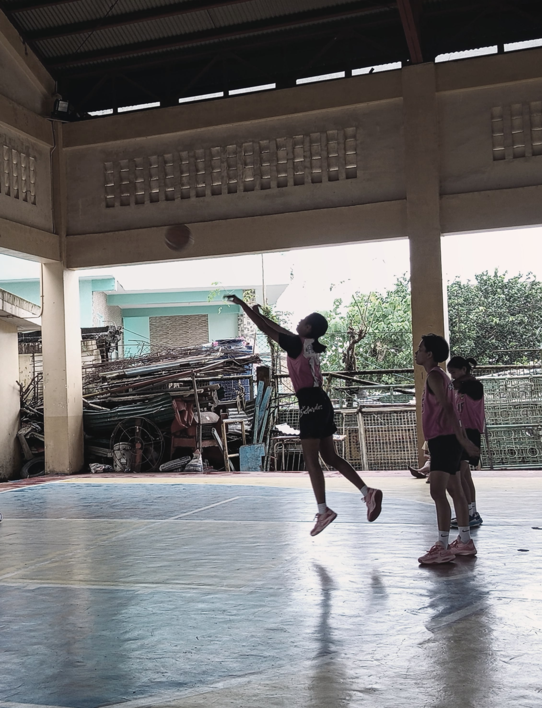
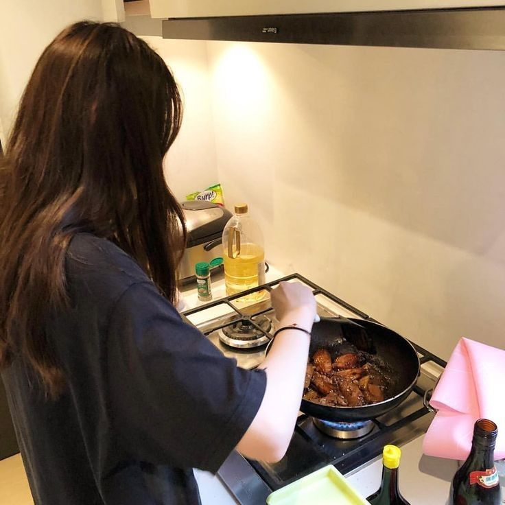
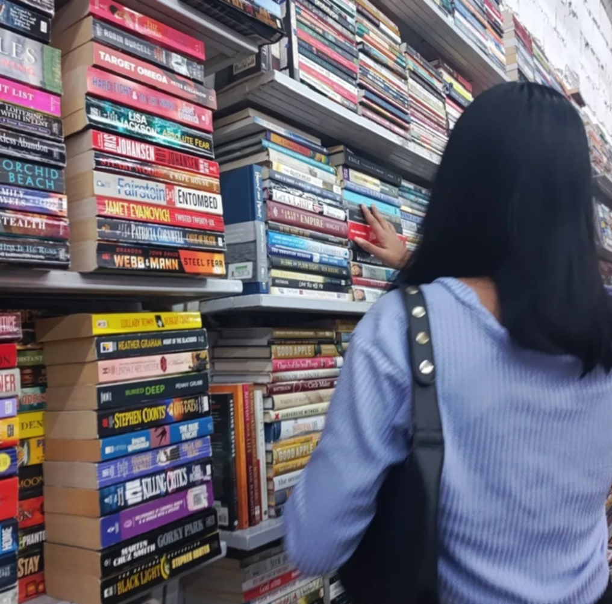
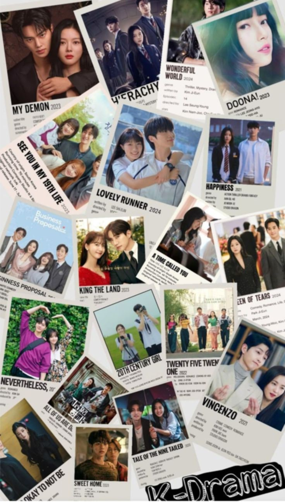

SPORT
I have a special love for basketball back in Albay, I even played as an athlete when I was in Grade 10.
Those were some of my best memories: practicing hard with my teammates, competing in school games, and
feeling the excitement of the crowd cheering us on. Even now that I’m here in Cavite, I still play
whenever I can, and it always reminds me of those days back home. The skills I learned and the bonds I
made with my fellow players are things I’ll never forget.

COOKING
I’ve also developed a love for cooking it’s become a way for me to bring a little bit of home to Cavite,
and to feel connected to my family in Albay. I love recreating the dishes my dad and mom make, like
Bicol Express and laing that remind me of our meals together back home. Sometimes I experiment with new
recipes too, and I always share photos of what I cook with my family and friends, who often ask me to
make my dishes when I visit Albay. Cooking helps me relax and express my care for the people I love,
even when we’re far apart.

READING
Why i like reading;I really love reading; there’s nothing better than getting lost in a good book.
Whether it’s a gripping
novel, an inspiring story, or something that teaches me new things, I enjoy how books can take me to
different places and help me see the world in new ways. When I’m missing my family and friends in Albay,
reading is also a great way to feel calm and connected to stories that remind me of home or open up
whole new adventures.

K DRAMA
I love watching K-dramas because they bring me so much comfort and joy. The stories are often heartfelt
and well crafted, with characters that feel like friends I can root for whether its a sweet romance,
an exciting thriller, or a moving family drama. I also enjoy learning about Korean culture, from their
traditions to their food and fashion. When Im missing my loved ones in Albay, watching K-dramas is a
great way to unwind, and its something I love discussing with my friends back home too.